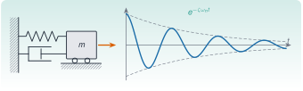
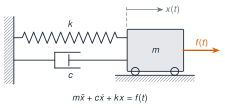
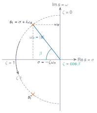
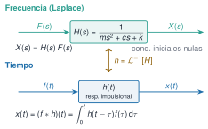
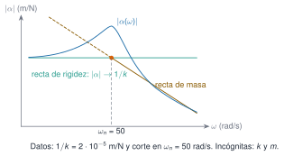

Teoría de vibraciones I
M5 · Sesión S5

Objetivos y prerrequisitos
Objetivos. Al terminar la unidad sabrás:
- plantear la ecuación del movimiento de un sistema de 1 grado de libertad (GDL) y reconocer qué hipótesis exige;
- obtener y interpretar la respuesta libre sin amortiguamiento y con amortiguamiento viscoso, en los tres regímenes (subcrítico, crítico y supercrítico), y leer en los polos la frecuencia y el decaimiento;
- distinguir el modelo de amortiguamiento viscoso del histerético y saber cuándo se usa cada uno;
- calcular la respuesta a una excitación armónica (transitorio, régimen estacionario, amplitud, fase y factor de amplificación) y distinguir \(\omega_n\), \(\omega_d\) y la frecuencia del máximo de respuesta;
- definir la función de respuesta en frecuencia (FRF) y sus tres versiones (receptancia, movilidad e inertancia), y dibujarla en Bode y Nyquist con sus asíntotas;
- relacionar función de transferencia, respuesta impulsional y convolución.
Prerrequisitos. J3.6 · Ecuaciones diferenciales ordinarias. Hace falta soltura con números complejos, la ecuación diferencial lineal de segundo orden y la transformada de Laplace.
Temas de la unidad
- M5.1 Sistema de 1 GDL: ecuación del movimiento
- M5.2 Vibración libre amortiguada y no amortiguada; decremento logarítmico
- M5.3 Modelos de amortiguamiento: viscoso, histerético y estructural
- M5.4 Vibración forzada armónica, resonancia y factor de amplificación
- M5.5 FRF: receptancia, movilidad e inertancia; diagramas de Bode y Nyquist
- M5.6 Excitación por la base, aislamiento, respuesta impulsional e integral de Duhamel
NotaNotación y convenciones (comunes a M5, M6 y M7)
| Símbolo | Significado | Unidad |
|---|---|---|
| \(m\), \(c\), \(k\) | masa, coeficiente de amortiguamiento viscoso y rigidez (1 GDL) | kg, N·s/m, N/m |
| \(h\) | coeficiente de amortiguamiento histerético (1 GDL) | N/m |
| \(x(t)\), \(f(t)\) | desplazamiento y fuerza | m, N |
| \(\omega_n=\sqrt{k/m}\) | frecuencia natural no amortiguada | rad/s |
| \(\zeta=c/c_c\), \(c_c=2m\omega_n\) | razón de amortiguamiento y amortiguamiento crítico | –, N·s/m |
| \(\omega_d=\omega_n\sqrt{1-\zeta^2}\) | frecuencia natural amortiguada | rad/s |
| \(s=\sigma+i\omega\) | variable de Laplace; \(\sigma\) = parte real | 1/s |
| \(\beta=\omega/\omega_n\) | relación de frecuencias | – |
| \(f=\omega/2\pi\) | frecuencia en hercios (el eje de una FRF suele ir en rad/s o en Hz: indica siempre cuál) | Hz |
| \(\mathbf{M},\mathbf{C},\mathbf{K}\) | matrices de masa, amortiguamiento y rigidez (varios GDL, desde M6) | – |
Unidad imaginaria y tiempo complejo. Usamos \(i\) y la convención \(e^{+i\omega t}\): una fuerza armónica es \(f(t)=\mathrm{Re}\{F e^{i\omega t}\}\) y la respuesta estacionaria va retrasada respecto de ella, de modo que la fase de la receptancia va de \(0^\circ\) a \(-180^\circ\). Si ves \(e^{-i\omega t}\) (convención de la física) los signos de las fases se invierten. Los apuntes escriben \(j\) o \(i\), y \(\Omega\), \(\omega\) o \(\omega_n\) para la frecuencia natural: aquí se unifican.
NotaFuentes, correcciones y qué queda pendiente
Fuentes. Apuntes manuscritos del Máster Agrela, curso 2024-2025 (carpeta Teoría de vibraciones). Citados como PDF, p. n (página del PDF, no la numeración manuscrita). Esta unidad es un texto autónomo escrito a partir de ellos.
| Contenido | Origen |
|---|---|
| M5.1 ecuación del movimiento, hipótesis | SDOF sin amortiguamiento, p. 1–2; Intro, p. 1–3 |
| M5.2 libre sin amortiguamiento, condiciones iniciales | SDOF sin amortiguamiento, p. 1, 4 |
| M5.2 libre amortiguada, regímenes, polos | SDOF con amortiguamiento, p. 1–5; SDOF sin amortiguamiento, p. 2–3, 5–6 |
| M5.3 modelo histerético (SDOF) | Diagrama de Nyquist, p. 1; (MDOF) MDOF, p. 8–11 |
| M5.4 forzada armónica, Q, fase | SDOF forzada, p. 1–2 |
| M5.5 FRF, receptancia/movilidad/inertancia, Bode, Nyquist, asíntotas | FRF, p. 4, 6–11; SDOF forzada, p. 3; Diagrama de Nyquist, p. 1 |
| M5.6 \(H(s)\), polos y residuos, \(h(t)\), convolución | FRF, p. 1–5 |
Correcciones y precisiones a los apuntes (comprobadas numéricamente en Julia y, para el código JavaScript de las figuras, contra esa referencia):
- SDOF sin amortiguamiento, p. 5: «undamped system (\(\zeta<1\))» debe ser underdamped (subcrítico); un sistema sin amortiguamiento tiene \(\zeta=0\).
- SDOF forzada, p. 1 (precisión): en la solución total, las constantes del transitorio se fijan con las condiciones iniciales de la solución total, no de la homogénea; y con la fuerza real \(F\cos\omega t\) solo se toma la parte real de la solución compleja.
- SDOF forzada, p. 2: «con \(\zeta=0\) y \(\beta=1\) el régimen estacionario tiene amplitud infinita» es impreciso: no existe régimen estacionario; la respuesta crece de forma lineal con el tiempo (§ M5.4). Además, el dibujo de \(Q(\beta)\) es cualitativo: para \(\zeta=0{,}05\) el máximo es \(Q\approx10\) y para \(\zeta=0{,}3\) es \(\approx1{,}75\), valores distintos de los marcados en la gráfica.
- SDOF forzada, p. 2: «el amortiguamiento solo es eficaz cerca de la resonancia» es válido para la amplitud; la fase cambia en una banda mucho más ancha, y el transitorio decae siempre con \(e^{-\zeta\omega_n t}\).
- FRF, p. 5: «amplitud inicial → residuo \(A\)». El residuo \(A=1/(2im\omega_d)\) es imaginario puro, de modo que \(h(0)=0\); lo que fija el residuo es la velocidad inicial de la respuesta impulsional, \(\dot h(0^+)=1/m\).
- FRF, p. 6–7: en el esquema de \(\mathrm{Im}\,\alpha(\omega)\) el nivel lejos de la resonancia parece quedar por encima de cero; para el modelo viscoso debe tender a \(0\) (\(\mathrm{Im}\,\alpha\le0\)).
- FRF, p. 10: «el amortiguamiento no afecta a la frecuencia de resonancia» es válido para \(\omega_n\) (la no amortiguada), pero \(\omega_d\) y el máximo de la receptancia sí se desplazan con \(\zeta\) (§ M5.4).
- SDOF sin amortiguamiento, p. 4: \(\varphi=\arctan(x_0\omega/v_0)\) solo cubre dos cuadrantes; usa
atan2. - Diagrama de Nyquist, p. 1: los pasos intermedios del círculo están desordenados; el resultado final (centro y radio) es correcto y aquí se rehace paso a paso.
Ampliaciones externas a los apuntes (derivaciones propias, no copiadas): energía disipada por ciclo y equivalente viscoso (§ M5.3); expresiones de \(\omega_{\text{pico}}\) para receptancia, movilidad e inertancia (§ M5.4); la movilidad viscosa como círculo exacto (§ M5.5); crecimiento lineal en resonancia sin amortiguamiento (§ M5.4). Lecturas para ampliar: (Inman 2017; Silva y Maia 1999; Avitabile 2018; Ewins 2000; Crandall 1970).
Pendiente (no cubierto por estos apuntes). Decremento logarítmico (M5.2); amortiguamiento «estructural» como concepto distinto del histerético y amortiguamiento de Coulomb (M5.3); excitación por la base y aislamiento de vibraciones (M5.6); forma explícita de la integral de Duhamel y su uso (M5.6; aquí solo se establece la convolución con \(h(t)\)).
Ewins, David J. 2000. Modal Testing: Theory, Practice and Application. 2.ª ed. Research Studies Press.
Avitabile, Peter. 2018. Modal Testing: A Practitioner’s Guide. Wiley.
Silva, José M. M., y Nuno M. M. Maia, eds. 1999. Modal Analysis and Testing. Springer. https://doi.org/10.1007/978-94-011-4503-9.
Inman, Daniel J. 2017. Vibration with Control. 2.ª ed. Wiley.
Teoría breve
M5.1 Sistema de 1 GDL: ecuación del movimiento
Definición 1 Grados de libertad (degrees of freedom, GDL). Número mínimo de coordenadas necesarias para fijar la configuración de un sistema.
Un punto material tiene 3 (traslaciones); un sólido rígido, 6 (tres traslaciones y tres giros); un sólido deformable, infinitos. De hecho, cualquier estructura real tiene infinitos GDL, pero en la práctica trabajamos con un número finito \(N\) de ellos (en los apuntes, del orden de 1 a 50), limitado por el rango de frecuencias de interés, por la amplitud medible y por la dificultad de medir giros. Un sistema de \(N\) GDL tiene \(N\) modos de vibración (M6).
El sistema de 1 GDL (single degree of freedom, SDOF) es el modelo más simple y el bloque de construcción de todo lo demás: más adelante veremos que un sistema de \(N\) GDL se comporta como una suma de \(N\) osciladores de 1 GDL (M6.3). Consta de una masa \(m\) que solo se mueve según una coordenada \(x(t)\), unida a un apoyo fijo mediante un muelle de rigidez \(k\) y un amortiguador viscoso de constante \(c\), y sometida a una fuerza \(f(t)\).

Aplicando la segunda ley de Newton a la masa (muelle y amortiguador se oponen al movimiento):
\[ m\ddot{x}(t)+c\,\dot{x}(t)+k\,x(t)=f(t). \tag{1}\]
TipIdea clave
Un oscilador de 1 GDL queda fijado por tres parámetros (\(m\), \(c\), \(k\)), que se resumen en tres números con sentido físico: \(\omega_n\) (a qué frecuencia oscila), \(\zeta\) (cuánta energía disipa) y \(1/k\) (cuánto se deforma bajo una carga estática).
AdvertenciaDos puntos que suelen confundir
- Si el muelle es vertical (como en los dibujos de los apuntes), \(x(t)\) se mide desde la posición de equilibrio estático; por eso el peso no aparece en la ecuación.
- La ecuación es una ecuación diferencial lineal, de segundo orden, con coeficientes constantes. Esa linealidad es una hipótesis del modelo, no una propiedad de la estructura: exige que \(m\), \(c\) y \(k\) no dependan de \(x\) (linealidad) ni de \(t\) (invarianza temporal); véase M7.1.
Pon a prueba lo anterior. Los ejercicios se corrigen en tu navegador y no envían nada a ningún sitio.
¿Cuántos grados de libertad tiene un sólido rígido libre en el espacio?
- 3
- 6
- 9
- Infinitos
Seis: tres traslaciones \((x,y,z)\) y tres giros \((\theta_x,\theta_y,\theta_z)\). El punto material tiene 3 y el sólido deformable, infinitos.
La ecuación \(m\ddot{x}+c\dot{x}+kx=f(t)\) puede aplicarse tal cual a un sistema cuya rigidez aumenta con la amplitud de la vibración.
Piensa en qué hipótesis hay detrás de que \(m\), \(c\) y \(k\) sean constantes.
Falso. Si \(k\) depende de \(x\), la ecuación deja de ser lineal: se viola la hipótesis de linealidad (M7.1), y las soluciones de M5 ya no valen.
M5.2 Vibración libre amortiguada y no amortiguada; decremento logarítmico
Sin amortiguamiento. Con \(c=0\) y \(f=0\), \(m\ddot{x}+kx=0\), es decir, \(\ddot{x}+\omega_n^2x=0\) con \(\omega_n=\sqrt{k/m}\). Probando \(x=Ae^{st}\) resulta \(s^2=-\omega_n^2\), \(s=\pm i\omega_n\), y con la fórmula de Euler
\[ x(t)=A\cos\omega_n t+B\sin\omega_n t. \]
Las condiciones iniciales \(x(0)=x_0\), \(\dot{x}(0)=v_0\) dan \(A=x_0\), \(B=v_0/\omega_n\):
\[ x(t)=x_0\cos\omega_n t+\frac{v_0}{\omega_n}\sin\omega_n t = X\sin(\omega_n t+\varphi),\qquad X=\sqrt{x_0^2+\left(\frac{v_0}{\omega_n}\right)^2},\quad \varphi=\operatorname{atan2}(\omega_n x_0,\,v_0). \]
Es un movimiento armónico simple de periodo \(T=2\pi/\omega_n\) y amplitud constante. La frecuencia natural solo depende de \(m\) y \(k\), no de las condiciones iniciales.
Con amortiguamiento viscoso. Con \(f=0\), probamos \(x=Xe^{st}\) y obtenemos la ecuación característica \(ms^2+cs+k=0\), cuyas raíces son los polos del sistema:
\[ s_{1,2}=-\frac{c}{2m}\pm\sqrt{\left(\frac{c}{2m}\right)^2-\frac{k}{m}} . \]
El radicando cambia de signo cuando \(c=c_c=2m\omega_n=2\sqrt{km}\) .
Definición 2 Amortiguamiento crítico y razón de amortiguamiento. \(c_c=2m\omega_n=2\sqrt{km}\) es el valor de \(c\) que anula el radicando; \(\zeta=c/c_c\) es la razón de amortiguamiento (adimensional).
Con ella,
\[ s_{1,2}=\left(-\zeta\pm\sqrt{\zeta^2-1}\right)\omega_n . \]
Según el valor de \(\zeta\) hay tres regímenes. La respuesta con condiciones iniciales \(x_0\), \(v_0\) es:
| Régimen | Polos | \(x(t)\) |
|---|---|---|
| Subcrítico \(\zeta<1\) | par complejo conjugado | \(e^{-\zeta\omega_n t}\Big[x_0\cos\omega_d t+\dfrac{v_0+\zeta\omega_n x_0}{\omega_d}\sin\omega_d t\Big]\) |
| Crítico \(\zeta=1\) | raíz real doble \(s=-\omega_n\) | \(\big[(1+\omega_n t)\,x_0+v_0\,t\big]e^{-\omega_n t}\) |
| Supercrítico \(\zeta>1\) | dos raíces reales negativas | \(e^{-\zeta\omega_n t}\Big[x_0\cosh\omega^* t+\dfrac{v_0+\zeta\omega_n x_0}{\omega^*}\sinh\omega^* t\Big]\), \(\ \omega^*=\omega_n\sqrt{\zeta^2-1}\) |
con \(\omega_d=\omega_n\sqrt{1-\zeta^2}\) la frecuencia natural amortiguada (rad/s). Solo el caso subcrítico oscila; el crítico y el supercrítico vuelven al equilibrio sin oscilar, y el crítico lo hace más deprisa (el polo lento del supercrítico, \(\omega_n(\zeta-\sqrt{\zeta^2-1})\), es más lento que \(\omega_n\)).

Interpretación de los polos (Figura 2). En el caso subcrítico, \(s=\sigma\pm i\omega_d\) con \(\sigma=-\zeta\omega_n\). Entonces
- la parte imaginaria es la frecuencia de oscilación \(\omega_d\) y la parte real fija el decaimiento \(e^{\sigma t}\);
- el módulo del polo es la frecuencia natural no amortiguada, \(|s|=\sqrt{\sigma^2+\omega_d^2}=\omega_n\), y \(\zeta=-\sigma/|s|=\cos\beta\), siendo \(\beta\) el ángulo entre el polo y el eje real negativo;
- los polos se mueven por una semicircunferencia de radio \(\omega_n\): parten del eje imaginario con \(\zeta=0\), bajan hacia el eje real y se juntan en \(-\omega_n\) cuando \(\zeta=1\); después se separan sobre el eje real.
La envolvente de la oscilación es \(Xe^{-\zeta\omega_n t}\) y el periodo amortiguado \(T_d=2\pi/\omega_d\) es mayor que \(2\pi/\omega_n\). En estructuras reales \(\zeta\) es pequeño (en los apuntes, menor del 10 %, salvo que haya sistemas de amortiguamiento activo), así que \(\omega_d\approx\omega_n\); pero conviene no confundirlas: la diferencia crece con \(\zeta\), y para \(\zeta\ge1\) la frecuencia amortiguada no existe.
Simulación 1. Respuesta libre. Cambia los parámetros y observa los tres regímenes y la posición de los polos.
AdvertenciaErrores frecuentes
- Confundir \(\omega_n\) (rad/s) con \(f_n=\omega_n/2\pi\) (Hz).
- Usar \(\omega_n\) en lugar de \(\omega_d\) dentro del seno y del coseno de la respuesta amortiguada.
- Pensar que «más amortiguamiento» es siempre «más rápido»: pasado el valor crítico, el sistema vuelve más lento al equilibrio.
ImportantePendiente en esta sección
Decremento logarítmico: no figura en los apuntes de partida y no se desarrolla aquí. Se completará a partir de una fuente verificable.
Pon a prueba lo anterior.
Un oscilador tiene \(m=2\) kg, \(k=800\) N/m y \(c=16\) N·s/m. Calcula su razón de amortiguamiento \(\zeta\).
\(c_c=2\sqrt{km}\) y \(\zeta=c/c_c\).
\(c_c=2\sqrt{800\cdot2}=80\) N·s/m, luego \(\zeta=16/80=0{,}2\).
Para el mismo oscilador, calcula la frecuencia natural amortiguada \(\omega_d\).
Primero \(\omega_n=\sqrt{k/m}\); después \(\omega_d=\omega_n\sqrt{1-\zeta^2}\).
\(\omega_n=\sqrt{800/2}=20\) rad/s y \(\omega_d=20\sqrt{1-0{,}2^2}=19{,}596\) rad/s (\(3{,}119\) Hz). Distingue siempre rad/s de Hz.
Con \(\zeta=2\) el sistema vuelve al equilibrio antes que con \(\zeta=1\).
Falso. El amortiguamiento crítico es el que vuelve más deprisa sin oscilar. Con \(\zeta>1\) uno de los polos reales, \(\omega_n(\zeta-\sqrt{\zeta^2-1})\), es más lento que \(\omega_n\), así que el regreso es más lento.
Con \(m=1\) kg, \(k=100\) N/m, \(c=0{,}6\) N·s/m, \(x_0=0{,}01\) m y \(v_0=0{,}3\) m/s, calcula en Julia \(x(0{,}37)\) de dos formas y comprueba que coinciden: con la fórmula cerrada subcrítica y con la exponencial matricial del espacio de estados. Escribe aquí el valor (en m).
using LinearAlgebra
m, k, c = 1.0, 100.0, 0.6
x0, v0, t = 0.01, 0.3, 0.37
# 1) fórmula cerrada: ωn, ζ, ωd …
# 2) A = [0 1; -k/m -c/m]; x = (exp(A*t) * [x0, v0])[1]ωn = sqrt(k / m); ζ = c / (2sqrt(k * m)); ωd = ωn * sqrt(1 - ζ^2)
x_cerrada = exp(-ζ*ωn*t) * (x0*cos(ωd*t) + (v0 + ζ*ωn*x0)/ωd * sin(ωd*t))
A = [0 1; -k/m -c/m]
x_matriz = (exp(A*t) * [x0, v0])[1]
@show x_cerrada x_matriz # ambos ≈ -0.021933Coinciden hasta la precisión de la máquina. Si no te sale, comprueba que usas \(\omega_d\) y no \(\omega_n\) dentro del seno y del coseno.
M5.3 Modelos de amortiguamiento: viscoso, histerético y estructural
Los apuntes usan dos modelos de amortiguamiento, que se comportan de forma muy distinta.
Viscoso. La fuerza disipativa es proporcional a la velocidad, \(f_d=-c\dot{x}\). Es el modelo de la ecuación ecuación 1 y el natural en amortiguadores y en fluidos. Es una ecuación diferencial real en el tiempo, válida para cualquier excitación (libre, armónica, transitoria).
Histerético. Se propone una fuerza disipativa proporcional al desplazamiento pero en cuadratura con él (adelantada \(90^\circ\)), de modo que con movimiento armónico \(e^{i\omega t}\) la ecuación es
\[ m\ddot{x}+k\,x+i\,h\,x=f(t),\qquad \alpha(\omega)=\frac{1}{k-m\omega^2+i\,h}, \]
donde \(h\) (N/m) es el coeficiente histerético; el cociente \(\eta=h/k\) se llama factor de pérdidas. En los apuntes se usa para la receptancia en el diagrama de Nyquist (SDOF) y en la ecuación del movimiento con matriz \([D]\) (MDOF, § M6.3).
Energía disipada por ciclo. Con \(x=X\cos(\omega t+\theta)\), la energía disipada por ciclo por el amortiguador viscoso es \(W_v=\oint c\dot{x}\,\mathrm{d}x=\pi c\,\omega X^2\), que crece con la frecuencia. Para el modelo histerético, la fuerza disipativa \(h\,x\) en cuadratura equivale a un amortiguador de constante \(c_{\mathrm{eq}}=h/\omega\) a esa frecuencia, y
\[ W_h=\pi\,h\,X^2 , \]
independiente de la frecuencia. Igualando ambos, a la frecuencia \(\omega\) el modelo histerético equivale a un viscoso con \(c_{\mathrm{eq}}=h/\omega\), y en resonancia (\(\omega=\omega_n\)) a una razón de amortiguamiento \(\zeta_{\mathrm{eq}}=\eta/2\).
NotaDemostración de \(W_v\), \(W_h\) y \(\zeta_{\mathrm{eq}}\)
Con \(x=X\cos(\omega t+\theta)\) resulta \(\dot{x}=-\omega X\sin(\omega t+\theta)\). En un ciclo, la energía que disipa el amortiguador viscoso es \(W_v=\int_0^{T}c\,\dot{x}^2\,\mathrm{d}t=c\,\omega^2X^2\cdot\tfrac{T}{2}=\pi c\,\omega X^2\), porque la media de \(\sin^2\) en un periodo es \(1/2\) y \(T=2\pi/\omega\). La fuerza histerética \(h\,x\) en cuadratura equivale a \(h\,\dot{x}/\omega\), es decir, a un amortiguador \(c_{\mathrm{eq}}=h/\omega\), de modo que \(W_h=\pi c_{\mathrm{eq}}\omega X^2=\pi hX^2\). En resonancia, \(c_{\mathrm{eq}}=h/\omega_n=2\zeta_{\mathrm{eq}}m\omega_n\) da \(\zeta_{\mathrm{eq}}=h/(2m\omega_n^2)=h/(2k)=\eta/2\).
| Viscoso | Histerético | |
|---|---|---|
| Fuerza disipativa | \(c\,\dot{x}\) | \(i\,h\,x\) (en cuadratura con \(x\)) |
| Energía por ciclo | \(\pi c\omega X^2\) (crece con \(\omega\)) | \(\pi h X^2\) (no depende de \(\omega\)) |
| Validez | cualquier excitación, en el tiempo y en frecuencia | solo régimen armónico (dominio de la frecuencia) |
| Pico de \(\lvert\alpha\rvert\) | cerca de \(\omega_n\sqrt{1-2\zeta^2}\) | exactamente en \(\omega_n\) |
| Lugar de Nyquist de la receptancia | casi un círculo si \(\zeta\) es pequeño | círculo exacto (§ M5.5) |
| Uso típico | amortiguadores; respuesta transitoria; integración temporal | ajuste de FRF medidas en materiales y estructuras |
El «\(i\)» de la ecuación histerética hace que, escrita en el tiempo, la ecuación no sea una ecuación diferencial real: el modelo se define para movimiento armónico y no sirve tal cual para simular una respuesta transitoria. Para ampliar sobre este punto, véase (Crandall 1970).
Crandall, Stephen H. 1970. «The role of damping in vibration theory». Journal of Sound and Vibration 11 (1): 3-18.
ImportantePendiente en esta sección
En los apuntes «estructural» aparece solo como etiqueta junto a «viscoso», «Coulomb» e «histerético»; en parte de la bibliografía se usa como sinónimo del histerético. No se desarrolla aquí como modelo distinto. Tampoco se trata el amortiguamiento de Coulomb (fricción seca).
Minguzzi, E. 2014. Rayleigh’s dissipation function at work. arXiv:1409.4041. https://arxiv.org/abs/1409.4041.
Pon a prueba lo anterior.
¿Cuál de estas afirmaciones sobre el amortiguamiento histerético es correcta?
- Es válido para cualquier excitación, también para una respuesta transitoria.
- La energía que disipa por ciclo no depende de la frecuencia.
- Disipa más energía por ciclo cuanto mayor es la frecuencia.
- Equivale siempre a un amortiguador viscoso de constante fija.
La b. \(W_h=\pi hX^2\) no depende de \(\omega\). Es un modelo de régimen armónico (a), y equivale a un viscoso solo a una frecuencia dada, \(c_{\mathrm{eq}}=h/\omega\) (d). Lo que crece con la frecuencia es la energía del modelo viscoso (c).
Reflexión (no evaluada). ¿Con qué modelo de amortiguamiento has trabajado antes?
- Viscoso
- Histerético
- Ambos
- Con ninguno, o no lo recuerdo
M5.4 Vibración forzada armónica, resonancia y factor de amplificación
Sea \(f(t)=\mathrm{Re}\{Fe^{i\omega t}\}=F\cos\omega t\). La solución es suma de la homogénea (transitoria, de M5.2, que decae como \(e^{-\zeta\omega_n t}\) si \(\zeta>0\)) y de una particular (estacionaria), que sigue a la fuerza: la que queda cuando el transitorio se ha extinguido. Para el régimen estacionario ensayamos \(x_p=\mathrm{Re}\{\bar{X}e^{i\omega t}\}\) con \(\bar{X}=Xe^{i\theta}\) complejo; sustituyendo, \((-m\omega^2+ic\omega+k)\bar{X}=F\), por tanto
\[ \bar{X}=\frac{F}{k-m\omega^2+i\,c\omega},\qquad X=\frac{F}{\sqrt{(k-m\omega^2)^2+(c\omega)^2}},\qquad \theta=-\operatorname{atan2}(c\omega,\;k-m\omega^2)\in(-\pi,0]. \]
Con \(\theta<0\) la respuesta se retrasa respecto de la fuerza. La respuesta completa es \(x(t)=x_h(t)+X\cos(\omega t+\theta)\), y las constantes de \(x_h\) se determinan con las condiciones iniciales de la solución total.
Factor de amplificación. Dividiendo por el desplazamiento estático \(X_s=F/k\) y con \(\beta=\omega/\omega_n\):
\[ Q(\beta)=\frac{X}{X_s}=\frac{1}{\sqrt{(1-\beta^2)^2+(2\zeta\beta)^2}},\qquad \theta(\beta)=-\operatorname{atan2}\big(2\zeta\beta,\;1-\beta^2\big). \]
Tres zonas:
- \(\beta\ll1\) (por debajo de la resonancia): \(Q\to1\) y \(\theta\to0\). La estructura responde de forma casi estática, controlada por la rigidez.
- \(\beta=1\) (resonancia): \(Q=1/(2\zeta)\) y \(\theta=-90^\circ\) para cualquier \(\zeta\). Está controlada por el amortiguamiento.
- \(\beta\gg1\): \(Q\approx1/\beta^2\) y \(\theta\to-180^\circ\). Domina la masa (la respuesta es muy pequeña y en oposición de fase).
Resonancia y las tres frecuencias. «Frecuencia de resonancia» se usa con varios sentidos. Con amortiguamiento viscoso son distintas:
| Frecuencia | Valor | Qué es |
|---|---|---|
| \(\omega_n=\sqrt{k/m}\) | – | natural no amortiguada; módulo de los polos |
| \(\omega_d=\omega_n\sqrt{1-\zeta^2}\) | – | frecuencia de la oscilación libre amortiguada |
| \(\omega_{\text{pico}}^{\alpha}=\omega_n\sqrt{1-2\zeta^2}\) | existe si \(\zeta<1/\sqrt2\) | máximo de \(\lvert\alpha\rvert\); ahí \(Q_{\max}=1/(2\zeta\sqrt{1-\zeta^2})\) |
| movilidad | \(\omega_n\) | máximo de \(\lvert Y\rvert\) |
| inertancia | \(\omega_n/\sqrt{1-2\zeta^2}\) | máximo de \(\lvert A\rvert\) |
Para \(\zeta=0{,}03\) (con \(\omega_n=10\) rad/s) los tres valores son \(10{,}000\), \(9{,}9955\) y \(9{,}9910\) rad/s: casi iguales, pero no la misma cosa. Para \(\zeta=0{,}3\) son \(10\), \(9{,}54\) y \(9{,}06\) rad/s. Para estructuras con amortiguamientos bajos se suele hablar sin distinguir; en una identificación precisa conviene saber a cuál te refieres (M7).
Proposición 1 Frecuencias de pico. Con amortiguamiento viscoso, el módulo de la receptancia \(\lvert\alpha\rvert\) alcanza su máximo en \(\omega=\omega_n\sqrt{1-2\zeta^2}\) (si \(\zeta<1/\sqrt2\)), con \(Q_{\max}=1/\big(2\zeta\sqrt{1-\zeta^2}\big)\); el de la movilidad \(\lvert Y\rvert\), en \(\omega_n\); el de la inertancia \(\lvert A\rvert\), en \(\omega_n/\sqrt{1-2\zeta^2}\).
NotaDemostración
Receptancia. \(\lvert\alpha\rvert\propto Q(\beta)\) es máximo cuando \(g(\beta)=(1-\beta^2)^2+4\zeta^2\beta^2\) es mínimo. Como \(g'(\beta)=-4\beta(1-\beta^2)+8\zeta^2\beta=4\beta\,(2\zeta^2-1+\beta^2)\), el mínimo está en \(\beta^2=1-2\zeta^2\) y vale \(g=4\zeta^2(1-\zeta^2)\), de donde \(Q_{\max}=1/(2\zeta\sqrt{1-\zeta^2})\).
Movilidad. \(\lvert Y\rvert=\omega\lvert\alpha\rvert\) y \(\beta^2/g(\beta)=1/\big((1/\beta-\beta)^2+4\zeta^2\big)\), que es máximo si \(1/\beta-\beta=0\), es decir, en \(\beta=1\).
Inertancia. \(\lvert A\rvert=\omega^2\lvert\alpha\rvert\) y, con \(u=1/\beta^2\), \(\beta^4/g=1/\big((u-1)^2+4\zeta^2u\big)\), que es máximo cuando \((u-1)^2+4\zeta^2u\) es mínimo: \(u=1-2\zeta^2\), es decir, \(\beta^2=1/(1-2\zeta^2)\).
Ejemplo 1 Ejemplo resuelto. Sea \(m=1\) kg, \(k=100\) N/m, \(c=0{,}6\) N·s/m, \(F=1\) N y \(\omega=9{,}5\) rad/s. Entonces \(\omega_n=10\) rad/s, \(\zeta=0{,}03\) y \(\beta=0{,}95\). Resulta \(Q=1/\sqrt{(1-0{,}9025)^2+(2\cdot0{,}03\cdot0{,}95)^2}=8{,}854\), la amplitud estacionaria \(X=QF/k=0{,}0885\) m y la fase \(\theta=-\operatorname{atan2}(0{,}057;\,0{,}0975)=-30{,}3^\circ\) (la respuesta se retrasa respecto de la fuerza).
Sin amortiguamiento. Con \(c=0\) y \(\omega=\omega_n\) no existe régimen estacionario: la solución particular crece sin límite, \(x(t)=\dfrac{F}{2m\omega_n}\,t\sin\omega_n t\) (con condiciones iniciales nulas). Es cierto que la amplitud «tiende a infinito», pero lo hace linealmente con el tiempo, y en un sistema real \(\zeta>0\) acota el máximo en \(Q=1/(2\zeta)\) una vez agotado el transitorio.
Simulación 2. Respuesta forzada. Excita el sistema con \(f(t)=F\cos\omega t\) desde reposo y observa cómo el transitorio da paso al régimen estacionario, y cómo cambian \(Q\) y la fase con la frecuencia relativa.
Dallard, Peter, Tony Fitzpatrick, Anthony Flint, et al. 2001. «The London Millennium Footbridge». The Structural Engineer 79 (22). https://istructe.org/journal/volumes/volume-79-(published-in-2001)/issue-22.
Billah, K. Yusuf, y Robert H. Scanlan. 1991. «Resonance, Tacoma Narrows bridge failure, and undergraduate physics textbooks». American Journal of Physics 59 (2): 118-24.
Pon a prueba lo anterior.
Con \(\zeta=0{,}2\) y \(\beta=\omega/\omega_n=0{,}9\), calcula el factor de amplificación \(Q\).
\(Q=1/\sqrt{(1-\beta^2)^2+(2\zeta\beta)^2}\).
\((1-0{,}81)^2+(2\cdot0{,}2\cdot0{,}9)^2=0{,}0361+0{,}1296=0{,}1657\), luego \(Q=1/\sqrt{0{,}1657}=2{,}457\).
Con \(\zeta=0\) y \(\omega=\omega_n\), la respuesta alcanza un régimen estacionario de amplitud infinita.
Falso. No existe régimen estacionario: la solución particular crece linealmente con el tiempo, \(x=\dfrac{F}{2m\omega_n}\,t\sin\omega_n t\). Con cualquier \(\zeta>0\), el máximo queda acotado en \(Q=1/(2\zeta)\) cuando se extingue el transitorio.
Explica con tus palabras por qué, en la resonancia, la amplitud queda controlada por el amortiguamiento y no por la masa ni por la rigidez.
- Menciono que en \(\omega=\omega_n\) se cumple \(k-m\omega^2=0\): la fuerza elástica y la de inercia se compensan.
- Concluyo que solo queda la fuerza de amortiguamiento para equilibrar la fuerza aplicada: \(X=F/(c\omega_n)\).
- Doy el resultado \(Q=1/(2\zeta)\) y la fase \(-90^\circ\).
En \(\omega=\omega_n\) la rigidez y la masa «se cancelan» en la ecuación, \((k-m\omega_n^2)\bar{X}+ic\omega_n\bar{X}=F\), de modo que \(\bar{X}=F/(ic\omega_n)\): la amplitud la fija solo \(c\) y la respuesta va retrasada \(90^\circ\). Por eso \(Q=1/(2\zeta)\).
M5.5 FRF: receptancia, movilidad e inertancia; diagramas de Bode y Nyquist
La función de respuesta en frecuencia (FRF, frequency response function) es la función de transferencia evaluada sobre el eje imaginario, \(H(i\omega)=H(s)|_{s=i\omega}\) (véase M5.6 para la diferencia entre \(H(s)\) y \(H(i\omega)\)). Para el sistema viscoso de 1 GDL, relaciona la amplitud compleja del movimiento y la de la fuerza armónica de frecuencia \(\omega\) en régimen estacionario:
\[ \alpha(\omega)=\frac{\bar{X}}{F}=\frac{1}{k-m\omega^2+i\,c\omega}\quad\text{(receptancia, m/N).} \]
Como en la práctica se mide aceleración o velocidad, hay otras dos versiones. Como \(\dot{x}\to i\omega\bar{X}\) y \(\ddot{x}\to-\omega^2\bar{X}\):
| FRF | Respuesta / fuerza | Expresión | Unidad | Fase respecto de \(\alpha\) | Inversa |
|---|---|---|---|---|---|
| Receptancia \(\alpha\) | desplazamiento | \(\dfrac{1}{k-m\omega^2+ic\omega}\) | m/N | – | rigidez dinámica |
| Movilidad \(Y\) | velocidad | \(i\omega\,\alpha\) | m/(s·N) | \(+90^\circ\) | impedancia mecánica |
| Inertancia (acelerancia) \(A\) | aceleración | \(-\omega^2\alpha\) | m/(s²·N) | \(+180^\circ\) | masa aparente |
Representaciones. Una FRF compleja puede mostrarse de varias formas:
- Parte real y parte imaginaria frente a \(\omega\). Para la receptancia viscosa, \(\mathrm{Re}\,\alpha\) es positiva por debajo de \(\omega_n\), cambia de signo en \(\omega_n\) y es negativa por encima; \(\mathrm{Im}\,\alpha\le0\) y tiene su valor extremo cerca de \(\omega_n\).
- Diagrama de Bode. Módulo y fase frente a \(\omega\). Con escalas logarítmicas no se pierde detalle en los niveles bajos. El módulo se expresa también en decibelios, \(20\log_{10}(|\alpha|/\alpha_{\mathrm{ref}})\), con \(\alpha_{\mathrm{ref}}=1\) si no se indica otra referencia.
- Diagrama de Nyquist. \(\mathrm{Im}\,H\) frente a \(\mathrm{Re}\,H\) con \(\omega\) como parámetro.
Asíntotas en el Bode logarítmico. En escala log–log, el módulo de la receptancia se aproxima por dos rectas:
- Baja frecuencia (\(\omega\ll\omega_n\)), recta de rigidez o de flexibilidad: \(|\alpha|\to1/k\), horizontal.
- Alta frecuencia (\(\omega\gg\omega_n\)), recta de masa: \(|\alpha|\to1/(m\omega^2)\), pendiente \(-2\) (en \(\log|\alpha|=-\log m-2\log\omega\)).
Se cortan exactamente en \(\omega_n\) (\(k=m\omega_n^2\)). Para movilidad e inertancia las pendientes se desplazan \(+1\) y \(+2\): rigidez \(|Y|\to\omega/k\), masa \(|Y|\to1/(m\omega)\); rigidez \(|A|\to\omega^2/k\), masa \(|A|\to1/m\).
Efecto de cambiar la masa, la rigidez o el amortiguamiento.
- Rigidez \(k\): desplaza la frecuencia de resonancia y cambia el nivel a baja frecuencia.
- Masa \(m\): desplaza la frecuencia de resonancia y cambia el comportamiento a alta frecuencia.
- Amortiguamiento \(c\): no cambia las rectas de masa y rigidez ni \(\omega_n\); modifica sobre todo la altura y la anchura del pico (y, ligeramente, \(\omega_d\) y la posición exacta del máximo).
Simulación 3. FRF en Bode con asíntotas. Cambia \(m\), \(k\) y \(c\) y compara el módulo con las rectas de masa y de rigidez.
Nyquist: qué círculo es cuál.
Proposición 2 Círculo de la receptancia histerética. Con \(\alpha(\omega)=1/(k-m\omega^2+ih)\), el lugar de Nyquist es un círculo exacto, de centro \((0,-1/(2h))\) y radio \(1/(2h)\), que pasa por el origen. La resonancia \(\omega=\omega_n\) es su punto inferior, \(\alpha=-i/h\).
NotaDemostración
Con \(a=\mathrm{Re}\,\alpha=(k-m\omega^2)/D\), \(b=\mathrm{Im}\,\alpha=-h/D\) y \(D=(k-m\omega^2)^2+h^2\), se cumple \(a^2+b^2=1/D=-b/h\), es decir \(a^2+b^2+b/h=0\). Completando cuadrados, \(a^2+\big(b+\tfrac{1}{2h}\big)^2=\big(\tfrac{1}{2h}\big)^2\). En \(\omega=\omega_n\), \(k-m\omega_n^2=0\) y \(\alpha=1/(ih)=-i/h\).
Los puntos de potencia mitad \(\omega_{1,2}=\omega_n\sqrt{1\mp\eta}\) están sobre la horizontal que pasa por el centro, donde \(|\alpha|=(1/h)/\sqrt2\); el ángulo entre ellos y el diámetro vertical es \(90^\circ\). Este razonamiento geométrico es la base del ajuste circular que verás en M7.2.
No hay que extender esa deducción al amortiguamiento viscoso: para la receptancia viscosa el lugar de Nyquist solo se parece a un círculo cuando \(\zeta\) es pequeño. Sí se cumple, y puede comprobarse, que la movilidad viscosa \(Y(\omega)=1/\big(c+i(m\omega-k/\omega)\big)\) describe un círculo exacto de centro \(1/(2c)\) y diámetro \(1/c\) (la expresión \(1/(c+iX)\) con \(X\) real recorre una circunferencia).
Simulación 4. Nyquist.
Pon a prueba lo anterior.
En el Bode log–log de la receptancia, ¿qué pendiente tiene la asíntota de alta frecuencia (la recta de masa)?
- \(0\)
- \(-1\)
- \(-2\)
- \(+2\)
\(-2\): a alta frecuencia \(\lvert\alpha\rvert\to1/(m\omega^2)\), es decir \(\log\lvert\alpha\rvert=-\log m-2\log\omega\). La recta de rigidez (\(1/k\)) es horizontal.
Para el oscilador \(m=2\) kg, \(k=800\) N/m y \(c=16\) N·s/m, calcula el módulo de la movilidad en \(\omega_n\).
En \(\omega_n\) se anula la parte reactiva y \(Y(\omega_n)=1/c=1/16=0{,}0625\) m/(s·N).
M5.6 Excitación por la base, aislamiento, respuesta impulsional e integral de Duhamel
Función de transferencia. Transformamos por Laplace la ecuación ecuación 1. Para derivadas, \(\mathcal{L}[\dot{x}]=sX(s)-x(0)\) y \(\mathcal{L}[\ddot{x}]=s^2X(s)-sx(0)-\dot{x}(0)\), de donde
\[ (ms^2+cs+k)\,X(s)-(ms+c)\,x(0)-m\,\dot{x}(0)=F(s). \]
Con condiciones iniciales nulas queda \(X(s)=H(s)F(s)\), con la función de transferencia
\[ H(s)=\frac{X(s)}{F(s)}=\frac{1}{ms^2+cs+k}=\frac{1/m}{(s-s_1)(s-s_1^*)} \]
cuyos polos \(s_1,s_1^*=\sigma\pm i\omega_d\) son los de M5.2. La función de transferencia es una función de la variable compleja \(s\); la FRF de M5.5 es su valor sobre el eje imaginario, \(H(i\omega)\), y solo describe el régimen estacionario ante una excitación armónica (un sistema estable con condiciones iniciales nulas).

Polos y residuos. Descomponiendo en fracciones simples,
\[ H(s)=\frac{A}{s-s_1}+\frac{A^*}{s-s_1^*},\qquad A=\frac{1}{m(s_1-s_1^*)}=\frac{1}{2i\,m\,\omega_d}=-\frac{i}{2m\omega_d}. \]
\(A\) y \(A^*\) son los residuos. Para 1 GDL, el residuo es imaginario puro (para varios GDL será complejo en general, M6). Cerca de un polo, \(H(i\omega)\approx A/(i\omega-s_1)\); en \(\omega=\omega_d\) resulta \(H\approx-A/\sigma\), que explica por qué el pico de la FRF es alto cuando \(|\sigma|\) es pequeño.
Respuesta impulsional. Si la fuerza es un impulso unitario, \(F(s)=1\), la respuesta es \(h(t)=\mathcal{L}^{-1}[H(s)]\). Antitransformando las fracciones simples,
\[ h(t)=Ae^{s_1t}+A^*e^{s_1^*t}=\frac{1}{m\omega_d}\,e^{-\zeta\omega_n t}\sin\omega_d t,\qquad t\ge0 . \]
Lo que importa de ella: la frecuencia de oscilación es la parte imaginaria del polo (\(\omega_d\)); la tasa de decaimiento es la parte real, \(|\sigma|=\zeta\omega_n\); y la magnitud del residuo fija la amplitud, de modo que \(h(0)=0\) y \(\dot{h}(0^+)=1/m\): el impulso comunica a la masa una velocidad inicial \(1/m\).
Convolución. Como el sistema es lineal e invariante, la respuesta a una fuerza cualquiera se obtiene sumando las respuestas a impulsos elementales:
\[ x(t)=(f*h)(t)=\int_0^t h(t-\tau)\,f(\tau)\,\mathrm{d}\tau,\qquad\text{equivalente a }X(s)=H(s)F(s). \]
En la frecuencia, la convolución se convierte en un producto: \(X(\omega)=H(i\omega)F(\omega)\) con \(H(i\omega)\) la transformada de Fourier de \(h(t)\).
Simulación 5. Del impulso a la convolución. Una fuerza rectangular de duración \(\Delta\) e impulso fijo de \(1\,\mathrm{N\cdot s}\) (\(F=1/\Delta\)): cuando \(\Delta\to0\) la respuesta tiende a \(h(t)\).
ImportantePendiente en esta sección
Los apuntes de partida no desarrollan la excitación por la base (movimiento del apoyo), el aislamiento de vibraciones ni la integral de Duhamel como herramienta de cálculo (la convolución anterior es la forma general de la que esta es un caso particular, pero su desarrollo y aplicaciones quedan pendientes de una fuente verificable).
Pon a prueba lo anterior.
Una fuerza impulsiva de \(0{,}5\) N·s actúa sobre una masa \(m=2\) kg en reposo. ¿Qué velocidad adquiere justo después?
\(v(0^+)=I/m=0{,}5/2=0{,}25\) m/s: es la propiedad \(\dot{h}(0^+)=1/m\) de la respuesta impulsional.
Un caso real: ¿fue resonancia? Elige uno de estos dos casos: la oscilación lateral de la pasarela del Milenio de Londres tras su apertura (2000) o el colapso del puente de Tacoma Narrows (1940). Averigua qué mecanismo se propuso en la literatura técnica y si el término «resonancia» lo describe bien.
- Localizo al menos dos fuentes fiables (informe de ingeniería, artículo técnico o libro) y las anoto con autor, año y enlace.
- Identifico el mecanismo propuesto: excitación periódica externa, autoexcitación o realimentación entre la estructura y quien la excita.
- Anoto la frecuencia natural y el amortiguamiento si constan, con su fuente.
- Explico si «resonancia» (excitación armónica a \(\omega\approx\omega_n\), como en M5.4) describe bien el caso y por qué.
- Compruebo cada dato en dos fuentes y descarto lo que no puedo localizar (C0.2).
Busca términos como lateral synchronous excitation, Millennium Bridge, Tacoma Narrows, aeroelastic flutter o self-excited oscillation, y desconfía de las explicaciones de libros de texto sin referencias.
No hay una única respuesta, y por eso es una investigación. Lo que cabe esperar que encuentres, y debes comprobar en tus fuentes, es que en ambos casos los autores distinguen entre una resonancia forzada sencilla y mecanismos de autoexcitación (en la pasarela, la sincronización lateral de peatones con el movimiento; en el puente, un fenómeno aeroelástico), y que la palabra «resonancia» se usa a menudo de forma coloquial. Anota qué fuente respalda cada afirmación.
Práctica guiada
Del modelo a la FRF de un oscilador. Sea el sistema de los apuntes: \(m=1\) kg, \(k=100\) N/m, \(c=0{,}6\) N·s/m.
- Calcula \(\omega_n\), \(f_n\), \(c_c\), \(\zeta\), \(\omega_d\) y los polos.
- Calcula la respuesta libre con \(x_0=0{,}01\) m y \(v_0=0{,}3\) m/s en \(t=0{,}37\) s y \(t=1{,}9\) s.
- Calcula el módulo y la fase de la receptancia en \(\omega=9\), \(9{,}5\), \(10\), \(10{,}5\) y \(11\) rad/s. Obtén también la movilidad y la inertancia y comprueba que sus módulos son \(\omega|\alpha|\) y \(\omega^2|\alpha|\).
- Comprueba que \(|\alpha(\omega_n)|=1/(c\,\omega_n)\) y que la recta de masa y la de rigidez se cortan en \(\omega_n\).
Código Julia (solo la biblioteca estándar; se ejecuta en local con julia --project=. practica_m5.jl):
using LinearAlgebra
m, k, c = 1.0, 100.0, 0.6
ωn = sqrt(k / m); cc = 2sqrt(k * m); ζ = c / cc; ωd = ωn * sqrt(1 - ζ^2)
println("ωn = $ωn rad/s ($(round(ωn/2π; digits=4)) Hz), cc = $cc, ζ = $ζ, ωd = $(round(ωd; digits=4))")
# Respuesta libre: forma cerrada frente a la exponencial matricial del espacio de estados
x_libre(t, x0, v0) = exp(-ζ*ωn*t) * (x0*cos(ωd*t) + (v0 + ζ*ωn*x0)/ωd * sin(ωd*t))
A = [0 1; -k/m -c/m]
for t in (0.37, 1.9)
exacta = (exp(A * t) * [0.01, 0.3])[1]
println("t = $t s: x = $(round(x_libre(t, 0.01, 0.3); digits=6)) m (exp(At): $(round(exacta; digits=6)))")
end
# FRF (convención e^{+iωt})
α(ω) = 1 / (k - m*ω^2 + im*ω*c)
for ω in (9.0, 9.5, 10.0, 10.5, 11.0)
H = α(ω)
println("ω = $ω: |α| = $(round(abs(H); digits=5)) m/N, fase = $(round(rad2deg(angle(H)); digits=2))°, ",
"|Y| = $(round(ω*abs(H); digits=4)), |A| = $(round(ω^2*abs(H); digits=4))")
endResultados verificados (ejecutando el código anterior y, de forma independiente, la integración numérica RK4 con paso \(10^{-4}\) s):
| Magnitud | Valor |
|---|---|
| \(\omega_n\), \(f_n\) | \(10\) rad/s, \(1{,}5915\) Hz |
| \(c_c\), \(\zeta\) | \(20\) N·s/m, \(0{,}03\) |
| \(\omega_d\) | \(9{,}9955\) rad/s |
| polos | \(-0{,}3\pm9{,}9955\,i\) |
| \(x(0{,}37)\), \(x(1{,}9)\) | \(-0{,}021933\) m, \(0{,}008023\) m |
| \(\lvert\alpha(\omega_n)\rvert\) | \(0{,}16667\) m/N \(=1/(c\omega_n)\) |
| \(\omega\) (rad/s) | \(\beta\) | \(\lvert\alpha\rvert\) (m/N) | Fase | \(Q\) |
|---|---|---|---|---|
| 9,0 | 0,900 | 0,05063 | \(-15{,}87^\circ\) | 5,06 |
| 9,5 | 0,950 | 0,08854 | \(-30{,}31^\circ\) | 8,85 |
| 10,0 | 1,000 | 0,16667 | \(-90{,}00^\circ\) | 16,67 |
| 10,5 | 1,050 | 0,08312 | \(-148{,}42^\circ\) | 8,31 |
| 11,0 | 1,100 | 0,04543 | \(-162{,}55^\circ\) | 4,54 |
Observa: \(\omega_{\text{pico}}^{\alpha}=9{,}9910\) rad/s es muy cercana a \(\omega_n\) para un amortiguamiento tan bajo; y a \(\omega=\omega_n\) la fase vale exactamente \(-90^\circ\).
Siguientes pasos en el repositorio. Esta misma comparación con integración numérica puede automatizarse con las herramientas de J3.6, y la medición real de FRF con martillo o excitador se trabajará en L3 · Ensayo modal experimental. El concepto de identificación se desarrolla en M7.
«Pídeselo a Claude»
TipPrompt
Tengo un oscilador de 1 GDL con \(m=2\) kg, \(k=800\) N/m y \(c=16\) N·s/m. Escribe un script de Julia que use solo la biblioteca estándar y que: (1) calcule \(\omega_n\), \(\zeta\) y \(\omega_d\); (2) calcule el módulo y la fase de la receptancia, la movilidad y la inertancia entre 1 y 100 rad/s con la convención \(e^{+i\omega t}\) y las compare con las asíntotas de masa y de rigidez; (3) compruebe numéricamente la respuesta libre frente a la exponencial matricial del espacio de estados. Indica las unidades de cada magnitud y dime qué has comprobado y qué no.
Verifica.
- \(\omega_n=20\) rad/s, \(\zeta=0{,}2\) y \(\omega_d\approx19{,}596\) rad/s. Si da otros valores, rehaz el cálculo a mano.
- La fase de la receptancia va de \(0^\circ\) a \(-180^\circ\) y vale \(-90^\circ\) en \(\omega_n\). Si sale al revés, la convención temporal es la contraria.
- Los módulos de movilidad e inertancia son \(\omega|\alpha|\) y \(\omega^2|\alpha|\); las asíntotas se cortan en \(\omega_n\).
- No aparecen paquetes ni funciones que no existan (C0.2).
Ejercicios
Parámetros. Un oscilador tiene \(m=2\) kg, \(k=800\) N/m y \(c=16\) N·s/m. Calcula \(\omega_n\) (rad/s y Hz), \(c_c\), \(\zeta\), \(\omega_d\) e indica el régimen.
NotaSolución\(\omega_n=20\) rad/s (\(3{,}183\) Hz); \(c_c=2\sqrt{km}=80\) N·s/m; \(\zeta=0{,}2\); \(\omega_d=20\sqrt{0{,}96}=19{,}596\) rad/s. Subcrítico.
Polos. Un polo medido es \(s=-3+40\,i\) (rad/s). Calcula \(\omega_n\), \(\omega_d\) y \(\zeta\).
NotaSolución\(\omega_d=40\) rad/s; \(\omega_n=|s|=\sqrt{3^2+40^2}=40{,}11\) rad/s; \(\zeta=-\sigma/|s|=3/40{,}11=0{,}0748\).
Respuesta forzada. El sistema del ejercicio 1 se excita con \(f=10\cos18t\) N. Calcula \(\beta\), \(Q\), la amplitud estacionaria y la fase.
NotaSolución\(\beta=0{,}9\); \(Q=1/\sqrt{(1-0{,}81)^2+(2\cdot0{,}2\cdot0{,}9)^2}=2{,}457\); \(X=QF/k=0{,}0307\) m \(=30{,}7\) mm; \(\theta=-\operatorname{atan2}(0{,}36;0{,}19)=-62{,}2^\circ\).
Asíntotas. En el Bode log–log de una receptancia, la recta de rigidez está a \(2\cdot10^{-5}\) m/N y corta a la recta de masa en \(\omega=50\) rad/s. Calcula \(k\) y \(m\).

Figura 4: Esquema del ejercicio 4: recta de rigidez, recta de masa y su corte en \(\omega_n\). NotaSolución\(k=1/(2\cdot10^{-5})=5\cdot10^4\) N/m; \(m=k/\omega_n^2=5\cdot10^4/2500=20\) kg.
Círculo histerético. El lugar de Nyquist de una receptancia histerética es un círculo de diámetro \(4\cdot10^{-4}\) m/N y \(k=5\cdot10^4\) N/m. Calcula \(h\), el factor de pérdidas \(\eta\) y la razón de amortiguamiento viscosa equivalente en resonancia.
NotaSoluciónDiámetro \(=1/h\Rightarrow h=2500\) N/m; \(\eta=h/k=0{,}05\); \(\zeta_{\mathrm{eq}}=\eta/2=0{,}025\).
Movilidad. Con el sistema del ejercicio 1, ¿cuánto vale \(|Y(\omega_n)|\) y por qué?
NotaSoluciónEn \(\omega_n\) la parte reactiva se anula, \(k-m\omega_n^2=0\), y queda \(Y=i\omega_n/(ic\omega_n)=1/c=0{,}0625\) m/(s·N).
Impulso. Una fuerza impulsiva de \(0{,}5\) N·s actúa sobre el sistema del ejercicio 1 en reposo. Calcula la velocidad inicial y el máximo de desplazamiento.
NotaSolución\(v(0^+)=I/m=0{,}25\) m/s. El máximo de \(x=I\,h(t)\) ocurre en \(t=\arctan(\omega_d/\zeta\omega_n)/\omega_d=0{,}0699\) s y vale \(9{,}45\) mm.
Fase y rigidez/masa. Sin calcular, indica la fase de la receptancia en \(\omega\ll\omega_n\), en \(\omega_n\) y en \(\omega\gg\omega_n\), y justifica qué parámetro domina en cada zona.
NotaSolución\(0^\circ\) (rigidez), \(-90^\circ\) (amortiguamiento), \(-180^\circ\) (masa).
La doy por superada si…
- Planteo \(m\ddot{x}+c\dot{x}+kx=f\) y explico qué hipótesis exige.
- Calculo \(\omega_n\), \(\zeta\), \(\omega_d\) y los polos, y distingo rad/s de Hz.
- Escribo la respuesta libre en los tres regímenes y la ajusto a unas condiciones iniciales.
- Lleno de significado la parte real y la imaginaria de un polo.
- Explico la diferencia entre el modelo viscoso y el histerético y cuándo usar cada uno.
- Calculo amplitud, fase y \(Q\) de la respuesta estacionaria, y distingo \(\omega_n\), \(\omega_d\) y el máximo de la receptancia.
- Dibujo la receptancia en Bode con sus asíntotas y explico qué cambia al variar \(m\), \(k\) y \(c\).
- Identifico que el círculo de Nyquist de este tema es el de la receptancia histerética y por qué no se extiende sin más al caso viscoso.
- Distingo \(H(s)\) de \(H(i\omega)\) y relaciono \(H(s)\), \(h(t)\) y la convolución.
- Sé qué temas (decremento logarítmico, excitación por la base, aislamiento, Duhamel) quedan pendientes.
Referencias
Son las mismas que aparecen en el margen, junto al texto. La lista completa del curso, con el estado de verificación de cada ficha, está en R5.
Avitabile, Peter. 2018. Modal Testing: A Practitioner’s Guide. Wiley.
Billah, K. Yusuf, y Robert H. Scanlan. 1991. «Resonance, Tacoma Narrows bridge failure, and undergraduate physics textbooks». American Journal of Physics 59 (2): 118-24.
Crandall, Stephen H. 1970. «The role of damping in vibration theory». Journal of Sound and Vibration 11 (1): 3-18.
Dallard, Peter, Tony Fitzpatrick, Anthony Flint, et al. 2001. «The London Millennium Footbridge». The Structural Engineer 79 (22). https://istructe.org/journal/volumes/volume-79-(published-in-2001)/issue-22.
Ewins, David J. 2000. Modal Testing: Theory, Practice and Application. 2.ª ed. Research Studies Press.
Inman, Daniel J. 2017. Vibration with Control. 2.ª ed. Wiley.
Minguzzi, E. 2014. Rayleigh’s dissipation function at work. arXiv:1409.4041. https://arxiv.org/abs/1409.4041.
Silva, José M. M., y Nuno M. M. Maia, eds. 1999. Modal Analysis and Testing. Springer. https://doi.org/10.1007/978-94-011-4503-9.